HENRY JOHN MOSS
May 6 1926 - January 8 2017
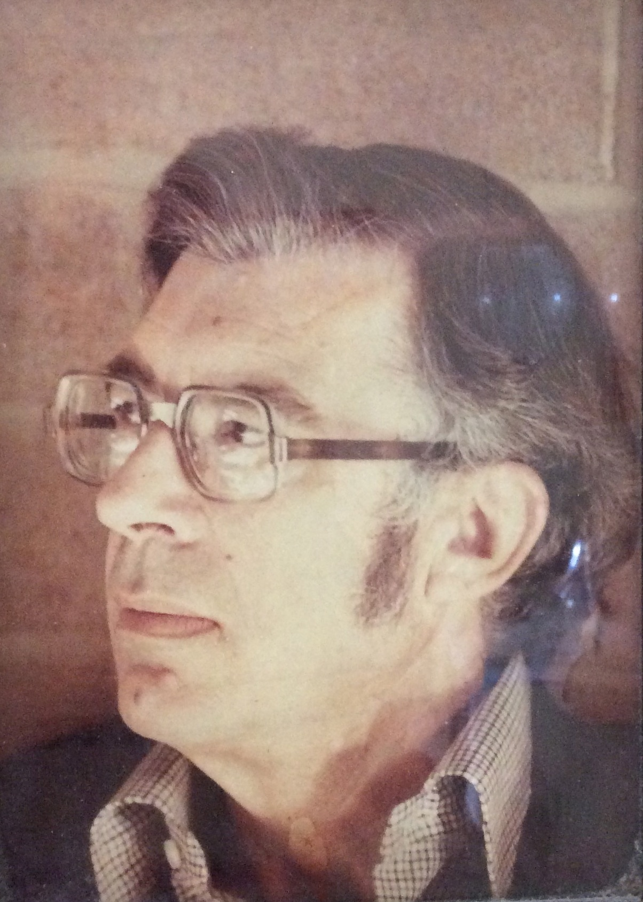
For Dad's 90th birthday in 2016, his last as it turned out, we decided to put together a book celebrating his life. It was launched at his birthday party at Robert's place in Leichhardt.
To celebrate the 6th of may 2020 we are re-launching the book on...
The Internet!
The Beginnings of Henry John Moss
by Robert & Kathryn Moss
John was very special. His Father was surprised when told by Mildred that she was pregnant. Lots of photographs were taken (by Aunt Enid?) Some of the historic albums are at Pymble.
John was bright. He learned to tell the time by the age of six. His Mother was very proud of this evidence of his intelligence. He appreciated rhymes, which Mildred recited. (She loved poetry in French, German & English.) As a child, he wore a hat in the days before skin cancer was publicised, and also clothes made by Mildred during the days of coupons, as it was during the Second World War.
He was helpful on the farm (with his brothers). They brought in the bread from the gate, fed the chooks, collected eggs, chopped wood for the fire and the stove, milked the cow...
While at school, and later at Melbourne University, he made friends who he retained for many years. He was studious, and benefitted from his Mother's generosity. She paid boarding and tuition fees at Carey Baptist Grammar School, where his maternal grandmother had laid the foundation stone. (Visit Carey archives to see photos of this, etc.)
He lost his father while still a teenager. He was a university student doing Science in Chemistry, so couldn't assist on the farm. He was an all rounder playing hockey at the University.
In Pymble he helped with the Scouts, worked hard painting the house and was a faithful correspondent to his Mother each week. (She liked to pass on the news to us.) He was always respectful of his Mother, and made time to visit her when he was in Melbourne e.g. at a conference. This meant a lot to her when she out-lived many of her friends, as she lived to be 93.
He enjoyed hobbies including collecting Australian stamps. (Mildred saved unusual ones for him.) Later he applied his professional research skills to family history. He collected birth, marriage & death certificates.
Jerry's Story
We had a dog called Britain, he was black and very large, looked like a Kelpie crossed with a German Shepherd, we could sit on him and ride him around. We also had meccano and John used to build bridges and cranes. I built trucks.
Some days when we three boys were playing with our toy cars, something would happen and Rob would start yelling, then John and I would get in trouble.
On one of the shelves in the pantry there were three Beemax tins for currants, sultanas and raisins. The raisins were furthest away and luckily John could reach the tin because raisins were his favourite. I preferred sultanas and I could just reach the sultana tin. Robert was only just tall enough to reach the currants, so whether by desire or design, currants became his favourite.
When we did jobs around the house, it was “John and Jerry, you two older boys, clean the open drain.” Then other times it was the two younger ones that had to do something or stay at home. I was caught either way.
1n the early 1930s, there were floods and the water came up to the corner of the garden. Dad and Cecil had to dig the bank of the dam to let the water out.
John and I were taken to primary school daily in a sulky pulled by mother’s white pony, Dot. We sat either side of mother just so there was no chance of any physical disputes. We only went to school in the car if mother was going somewhere else that day. She usually went to Mrs Balfour’s at Round Hill, three miles east of Culcairn.
In 1935, there was a big typhoon or hurricane. Mum was bringing us back from school and we were caught up in a howling gale with torrential rain. Mum pulled the sulky up at Johnny Gardiner’s and couldn’t find the gate, so tied Dot to the fence. While we were there we heard a huge tree crash down. Dad came to get us in the car, then next morning on the way to school we saw that the tree had squashed the gate that Mum meant to tie Dot to.
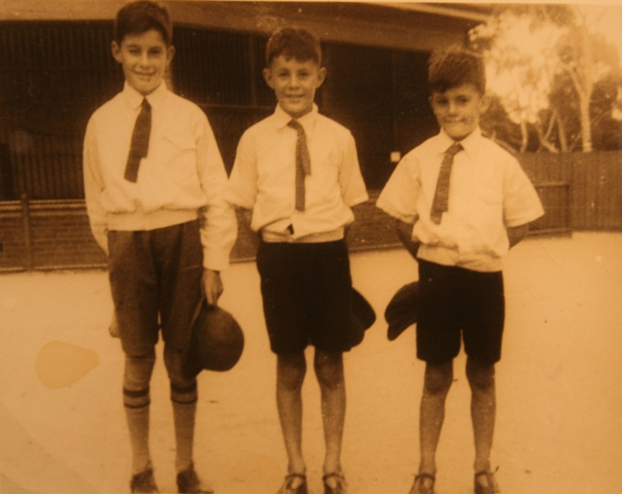
John, Jerry & Robert
Every Christmas Dad would drive us all to Melbourne to visit Gran Moore (in the buff coloured Standard with black mud guards). We two younger boys would spend one week in a boarding house at the beach and one week at a riding school. One year we all went to Cowes and stayed in a boarding house.
We only went to Brisbane once to visit all the grandparents and great aunts. In 1936 Dad drove all of us to Brisbane via Parkes (in the 1934 blue Rover). On the return journey I remember there was a tar road around Taree and a ferry across the Hawkesbury River at Pete’s Ferry.
Sometimes Gran and the Aunts (Enid and Dorothy) would visit the farm. Aunty Margaret didn’t ever visit the farm. Grandfather Moore had died in late 1927 or early 1928, before I was born.
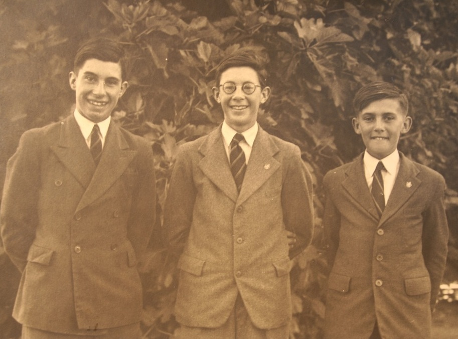
John, Jerry & Robert
John went to Carey Baptist Grammar School in Melbourne (349 Barkers Road, Kew). There were three hundred pupils, two hundred in High School and one hundred in Prep. The school was started by our grandfather William Moore. There were three houses, School House, which all the boarders were in and its colour was blue, Trayntor House, which was black and Moore House, which was Gold. Cousin Bill Moore was in Moore House. John was already at Carey when I started so this made things easier for me, having a big brother already there.
John and I finished school the same year. In the Christmas holidays John worked and stayed on a couple of farms to earn money for when he was at uni, I was at home and started working there. John went to uni in Melbourne and stayed in Ormond College.
Judith’s Story
When we first met, John was working as a chemist at the Victorian State laboratories, and I as a textile designer at Vida Turner Pty. Ltd., the Melbourne equivalent of Florence Broadhurst Designs. My brother Peter & John were both friends of John Tingate. Along with other engineers & their girlfriends & sisters we got together for musical evenings and for comparing each other's superior recording equipment. On 14/5/50, after a few of these evenings, John asked me to go for a drive to the hills with him in his new A40, where we got to know each other better.
Music has always been one of the joys of our life, starting from the first days of our friendship. After a whirlwind courtship and engagement we were married on 3/2/51. With money John had saved we bought our first home in Oakleigh, Melbourne, and moved in well equipped with everything a newly wed couple could need, even a rotary clothes hoist, which was purchased with the money I had saved for a trip overseas!
Andrew was born in 1952 and Catherine in 1955, shortly after which we moved to Croydon. Thereafter followed Vicki in 1956, Robert in 1957 and Stephen in 1960. John was an absolutely wonderful Father, supporting busy little me in everything. He was a calming influence for my excitability. He took all the children for walks at the weekends and was a great story teller at bed-time. Our 5 acres at Croydon, with our little flock of sheep plus Cedric the ram, was an ideal environment for small children.
In 1963 we decamped to Sydney where John took up the position of Senior Research Officer in the Cereal Division of the Bread Research Institute. An interesting job for someone who grew up on a sheep & wheat farm, with an inside knowledge of what growing wheat involved. The farmers he dealt with, and likewise the research scientists, would probably have recognised this.
John's time at BRI presented great opportunities for him to use these qualities and I leave details of this to someone who worked alongside him during those years. John travelled widely in his capacity as wheat quality expert, and was highly regarded everywhere he went. Back home, it was a great opportunity for our children growing up to meet people from the many different counties and cultures who came to dine with our family. Likewise our visitors enjoyed seeing Australian home life first hand. John was offered a Reserve Bank Fellowship for two years research at the University of Western Australia so we spent 1971 & 1972 in Perth, which brought great change in the family, new friendships and new experiences.
Speaking of home, John and I realised early on, when times of big decision making arrived (as they often did), that though we usually held diametrically opposed views, we were able to talk around a problem and reach common ground. We tried never to retire for the night in dispute.
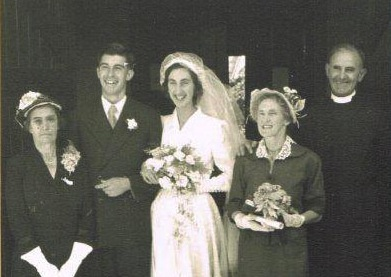
Mildred, John, Judith, Elsa, Sidney
3 February 1951
After the children had all left home to live their own lives, and John had retired, we hopped in our campervan and drove off around Australia for six weeks, and didn't think about work at all! Our many adventures in the van were a great joy to us, and we certainly got up close & personal with a large part of Australia, as well as many of its off shore Islands. We joined the Gordon Bowling Club together in 1990, and it’s great that John still enjoys the game & the companionship that goes with it.
We count ourselves privileged and greatly blessed, to have spent 65 years together and still be in reasonable health, and we aim to continue growing older together as gracefully as possible.
We are immensely proud of the nice people our children have become, and trust they and their partners and families will have long and happy lives too.
The Answer Lies in the Soil
by Andrew Moss
A story based in truth but on the faltering recollections and ill-matching records of the various participants, and of Drs. Google & Wiki.
GOVERNMENT SCIENCE LABS MELBOURNE MID 1950s
H. John Moss in his white coat, shirt and tie, peers intently through his spectacles into the beaker of wheat grains he is studying. “Got a minute John?” asks a voice.
“Yes boss what’s up?” asks John looking up from between a jungle of test tubes and various scientific and commercial food processing equipment.
“A gentleman here from the police. Your wheat for testing is a bit low due to the drought so you might like to help out with his murder enquiry.”
John raises his eyebrow and glances at the policeman proffering a human skull wrapped in a towel.
“A bloke out past Essendon turned this up while he was ploughing up a new paddock. The local doctor reckons he was a male in his thirties who suffered a jab in the eye with a sharp object. He says it must’ve been there since before Christmas but how long exactly could depend on what sort of fertilizers and that the previous owner had been putting in the soil. That’s what the doctor reckons. Anyhow we’ve ruled out the bloke who disappeared from Warrandyte in January being the victim.”
“Where do I fit into it?"
“We were hoping you might tell us how long it’s been there. We don’t have any missing persons matching up to it so we don’t know where to go with our enquiries.”
“Oh, OK well we do have some new gear that might help, but it might take more than a week or so.” No worries John I’ll leave it with you then.” John nods and examines the skull intently.
BREAKFAST AT 333 WHITEHORSE ROAD CROYDON
“Come on John you’ll be late for work” says the heavily pregnant young Judith, feeding toddler Catherine with Farax as John nods and scrapes the last spoonful of porridge from his bowl.
“Yes dear” John says, standing up and kissing her on the forehead, then smiling at the baby, leaning over and kissing her on the forehead and saying “Bye Bye Bub-clicks.” John fills his mouth with the last of the porridge, puts his coat on and grabs his brief case and heads towards the door.
Buster wags his tail and begs for a farewell acknowledgement. “You haven’t cleaned your teeth!” berates Judith. John pats Buster, pulls a toothbrush out of his pocket, waves it triumphantly then bolts through the door, walks briskly past the tennis court, spots the milkman’s horse pulling his jingling cart along Zealandia Road, then he strides briskly down the drive through the pine trees and out on to Whitehorse Road crosses over to wait at the bus shelter on the corner of Links Road for Mr Usher’s rickety old cream bus to take him to Croydon Station so he can get the train to the city.
Buster watches the door with his tail drooped and his ears cocked until the last sound of John’s footsteps have faded even from his faithful and sensitive hearing, then he sits down listlessly near the door until he eventually bounces back into curiosity, looks up to his left and stealthily steps up to sniff at the cool cupboard. Finding no evidence of anything worth a break-in attempt, he moves to his left to examine the stove and sensing nothing but the remains of porridge – not his favourite – ambles round past the little passage leading to the bathroom, laundry and the back door.
Remembering that Judith might realise he shouldn’t be in the house, Buster glides away from the exit further round to his right to examine the sunroom, but it is too early for any action there so he does a full circuit of the kitchen, past the door through into the seventy year old brick half of the house where there is no evidence of movement and completes his circuit to plonk down with a sigh exactly where he had received the last pat from his departing lord and master.
He watches Judith finish feeding Catherine, his ears alert to any sound from the door immediately behind him, and his eyes able to detect any movement that may come from the other entrances to the kitchen. Eventually Buster’s ears prick up, he jumps, barks and scurries excitedly out through the door into the old brick section, having detected something of interest. A minute later Buster comes back into the kitchen, proudly announcing that he has found Andrew. Andrew, rubbing sleep from his eyes and patting Buster’s ear smiles his own arrival to his mother and sister.
‘Hello darling would you like a boiled egg?” asks Judith. Andrew nods and heads towards the cool cupboard, noticing there are no eggs on the table, and on the stove only one pot, and that has porridge round its edge.
“No eggs mum,” says Andrew after he and Buster have examined the cool cupboard. “Well you’d better go and get some then dear.” Andrew and Buster go out past the laundry where Andrew picks up a galvanised iron bucket and they walk past the willow tree on the left and the shed on the right with the rambling veggie garden behind it and over to the chook pens.
BACK TO THE LAB
John is standing over a loudly vibrating sifting appliance from which a thin cloud of white dust is rising.
“Those fellows are here to see you John.” A woman’s voice yells out over the noise:
“Ah yep. Show them through.”
Two older blokes and two younger blokes all bearing the same ‘agricultural resemblance’ to each other amble into the lab.
“Gidday fellows” says John shaking each of their hands. “Nice to see you again. Would you like a cup of tea?” “Yeah” they all nod glancing at each other in mutual agreement.
John takes a beaker from the shelf next to the skull, measures the correct amount of water and sets it on a Bunsen burner as the other four glance smirkingly at each other.
“Now what can I do for you this time?” asks John.
A Farmer: “Well that wheat you told us about didn’t work.”
John: “Didn’t work?”
B Farmer: “We tried making Macaroni out of it but its useless.”
C Farmer: “Compared with the imported stuff you wouldn’t touch it.”
“Right,” says John “Now as I recall, you blokes have a couple of wheat farms. One in the Mallee and one in the Wimera, and you’ve also got a flour mill and a biscuit factory.”
D Farmer: “Yeah, and now we’ve got a bloody useless macaroni factory.”
John: “Its not a bad idea – the macaroni.”
A Farmer: “Yeah well there’s no shortage of eyeties to sell it to these days eh?
John: “But it’s probably not the factory that’s useless. It’d be the wheat, or rather the soil the wheat is being grown in.”
All Farmers in unison: “Whaterya mean?
John: “Well what did I tell you you needed when you came to see me about this a couple of years ago?”
All Farmers in unison again; “Nitrogen.”
John: “That’s right. If you want to make macaroni you need hard wheat, hard wheat means high protein wheat and to grow high protein wheat you need high nitrogen soil”
All Farmers: “We spread nitrogen!”
John: “Look fellows, if you want to grow good quality hard wheat for macaroni you need to grow it in high nitrogen soil. It’s as simple as that.”
A Farmer: “So you reckon we should give up?”
John: “No – there are people making good pasta products in Australia with good quality Australian wheat, so there’s no reason why you shouldn’t be able to.”
B Farmer: “OK what’s the most cost-effective way to grow the right wheat?”
John: “Long term?”
C Farmer: “Yep.”
John, smiling broadly: “Buy a farm in the Darling Downs.”
D Farmer, smirking: “Ha. Yeah. Right. ... Well even if we could afford it - that’s not going to get macaroni into packets next week.”
A Farmer: “What about short term?
John: “Buy some hard wheat already milled from New South Wales.”
B Farmer: “But we don’t want to let Gillespies and that get the jump on us.”
John: “You could try buying a truck load of wheat direct from a grower in Northern New South Wales or Southern Queensland.“
C Farmer: “And that would work would it?”
John: “You’d have to tinker round with your milling gear a bit to get it right so your first truck load may not be too profitable but yeah it would work.”
D Farmer: “Where would we get a truck load of the right wheat?”
John: “ I can put you on to a bloke in Narrabri who could help you.”
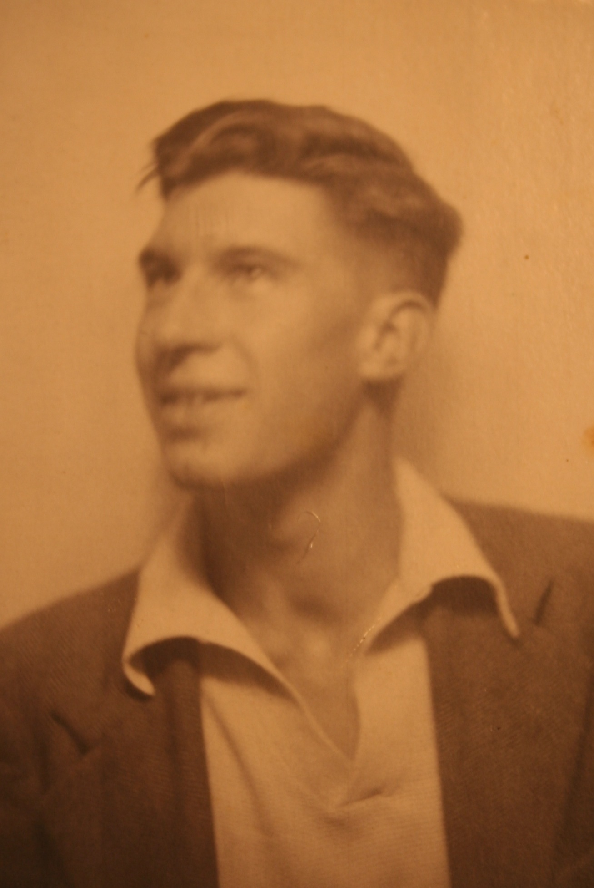
THE SITTING ROOM AT CROYDON
John is sitting in an armchair by the fire reading a book and stroking Andrew’s head while Andrew sits on the floor leaning against the arm-chair reading his own book.
The warm silence except for the crackling of the fire is suddenly broken by the sound of the phone on the wall in the passage ringing. “I’ll get it.” Calls out Judith, who has just put Catherine to bed. “Croydon 158… Oh... No… A truc…? Oh No.”
John and Andrew look up from their books and look towards the door into the hall in fearful anticipation. “It’s for you John” calls out Judith, her voice unable to disguise a sense of foreboding.
John and Andrew both get up and walk into the hall. Judith hands John the earpiece, which he puts to his right ear as he leans over and speaks into the mouthpiece. “John Moss” ..... “Come on dear its past your bed time.” Says Judith putting her hand down on Andrew’s back and steering him towards his bedroom.
After a brief conversation John finds his car keys, trudges forlornly through the door, jumps in the blue grey Austin A70, drives round past the tennis court down Zelandia Road onto Bonnieview Road and round the corner. Fifteen minutes later he parks the car back at home, lifts the still warm but now lifeless body of Buster from the boot of the car and carries it round the side of the house towards the orchard.
“Mummy," says Andrew next morning in the sun room.
“Yes darling," replies Judith absent mmindedly whilst concentrating on listening to Blue Hills on the wireless and changing Catherine’s nappy.
“I saw daddy standing and crying over a little garden he dug near one of the fruit trees.”
“You’d better go and get some eggs from the chook house dear.”
MEANWHILE BACK IN THE LAB
John’s boss: “John, Where the blazes is that policeman going with the skull?”
John: “Melbourne University I spose.”
John’s boss: “But I thought you were helping him with it?”
John: “I did.”
John’s boss: “Then why does he have such a shocked look on his face?”
John: “I’m a bit surprised myself to be quite honest.”
John’s boss: “Why?”
John: “I haven’t helped him catch the murderer that’s for sure.”
John’s boss; ‘ye..es?”
John: “I just told him the Keilor skull is seven thousand years old.”
Cedric
by Catherine Fox
Cedric was dead and our Dad had to bury him. After school we balanced on the wires of Mum's kitchen garden fence and watched Dad roll up his white shirtsleeves and take up his spade on the other side. The hole grew very slowly deeper and the dirt pile higher. It looked like sweaty hard work because Dad had to stop a lot and look out far away from us. He took deep breaths and mopped his face a lot.
The other side was the paddock where Cedric the proud roamed free, followed everywhere by his ewes and all their lambs. He had won many ribbons for Dad at the local show. Dad the country boy came home every day from the scientific world of his city work and breathed in the smells of his paddocks, counted his sheep and listened for harmony in the hen house.
Cedric had broken into our house once and stalked the rooms in statesmanlike fashion until he’d seen enough and agreed to be shooed back to the paddock.
This day Cedric the ram broke into the chook pen and raided the feed room. It was a tiny room only wide enough for one woolly ram. He was tall enough to reach his greedy snout over the lip of the trough and dig in to the golden grain waiting for him. How lucky can you get? As he ate he bloated and then he couldn't move and he was really stuck. What could he do? He kept eating and eating and eating, fit to burst as our Mum liked to say. Burst he did, when the stomach gases couldn’t get away. I wanted to ask Dad if he went bang when he popped but everyone was quiet now, watching Dad. Dad was mopping his face again.
Finally Dad dragged the lifeless mound of wool and his four stiff legs into his grave and filled in all that dirt. The ram and the dirt made a round bump in the paddock so Dad called us down from the fence to help settle the earth. On we piled and jumped up and down. It wobbled unsteadily. Jump and wobble, ha, ha, ha! We all fell off, then we got up again, then we all fell off again, giggling till we cried. But not Dad, he wasn’t laughing. We all darted sideways looks at each other and went silently inside the house to tell Mum.
Dad began the hard task of digging a deeper grave for his dear Cedric.
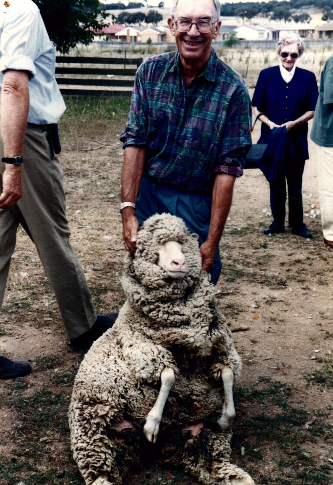
The Orator
by Catherine Fox
Dad was the quiet man who drove off to work five days a week. He parked the Austin A70 at Croydon station and caught a train to the city. At home he was calm as he kept order in a writhing household of five children spanning only seven years between first and last. He was another person too, the one who told grand stories when he came back from a long trip away. His trips always seemed long, even if they lasted only a few days.
One Sunday Dad asked if any of us five wanted to go with him in the Morris to a distant church where he as a lay preacher was to fill in for the absent minister. Only I accepted and thoroughly enjoyed the rare privilege of sitting all the way there and back in the passenger seat. When we arrived the other Dad emerged from the driver’s door to greet the eager folk. I was shepherded away by blowsy ladies wearing Sunday hats, the clutch caps that gripped their grey curls like starfish dotted with pearly beads. No thank you, I wanted to sit in the church and listen to my Dad. One of the starfish ladies offered to sit with me and I was glad.
The orator spoke to the people and they listened. Their heads nodded and they smiled, they were entertained, they were at peace. Dad’s words entered them and made meaning in their hearts. His words washed over and around me and I understood not a bit of its meaning but I saw clearly the effect. He spread his arms to include all; he leaned forward and dropped his voice; he deployed silence as he looked each one of us in the eye and all of us were enthralled. My Dad is marvellous, isn’t he? Then there was cake.
As we five progressed through our teen years the lay preaching dropped off my radar. I think Dad eventually resigned as his workload increasingly required longer journeys both interstate and abroad. The orator returned from these trips with ribald jokes and long, intricate stories. Much of this was unfathomable to me, but as on that childhood mission the effect of the cadence and unfolding story on the adoring audience was clear. That orator is quieter these days, just waiting for an invitation.
Working at BRI
by Di Westcott
When John joined the then Bread Research Institute at North Ryde in 1963 as Senior Research Officer, his work was focussed on wheat quality and how that affected the quality of bread produced in commercial bakeries. Work evolved to include milling quality – how much flour can be produced from a tonne of wheat – which is important to the profitability of flour millers even to-day. The continuing evaluation of milling and baking properties of new wheat varieties prior to their release for widespread agriculture became even more important with the ‘’green revolution” of the late 1960s. This enabled Australian wheat breeders to import the new high yielding, semi-dwarf (reduced height) wheats for use in their own wheat breeding programs. John’s opinion of new wheat varieties was widely sought by breeders, flour millers and bakers alike.
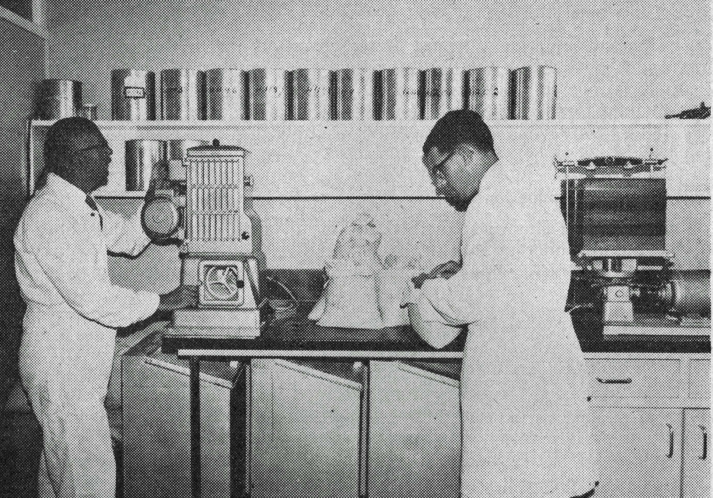
John with Bob Morris in the test mill room just after John commenced at BRI in 1963
After an opportunity arose in 1971 to become a Reserve Bank Senior Research Fellow, John took a two year sabbatical in Western Australia. The wheat growers there benefited from his research work on soft biscuit wheats and a new class of wheat was later segregated for domestic and export use.
The 1960s, 70s and 80s saw the rapid expansion of the wheat export market and the development of flour mills in Asia and the Middle East. Formalisation of an agreement with Australian Wheat Board (AWB) resulted in the establishment of the Central Grain Research Laboratory, and Di Miskelly and later Margaret Price (now May) became part of the team. A building extension was opened in 1976 and this meant new research projects, new laboratories and a new office in which John could hang one of Judith’s paintings.
It was important to understand the new wheat markets and John travelled to South America, North Asia and South East Asia on AWB technical survey and market development missions. Some of these were with Bob Cracknell, the AWB Technical Advisor. This travel in pre-internet and mobile phone days was not without adventure. On a 1978 trip to China, a piece of laboratory equipment (a falling number machine) was carried as hand luggage on the plane. The equipment was demonstrated in a room at the Beijing Hotel and as there were no scales, the wheat samples had to be hastily weighed in the Post Office on the ground floor of the building. Fortunately, the demonstration worked.
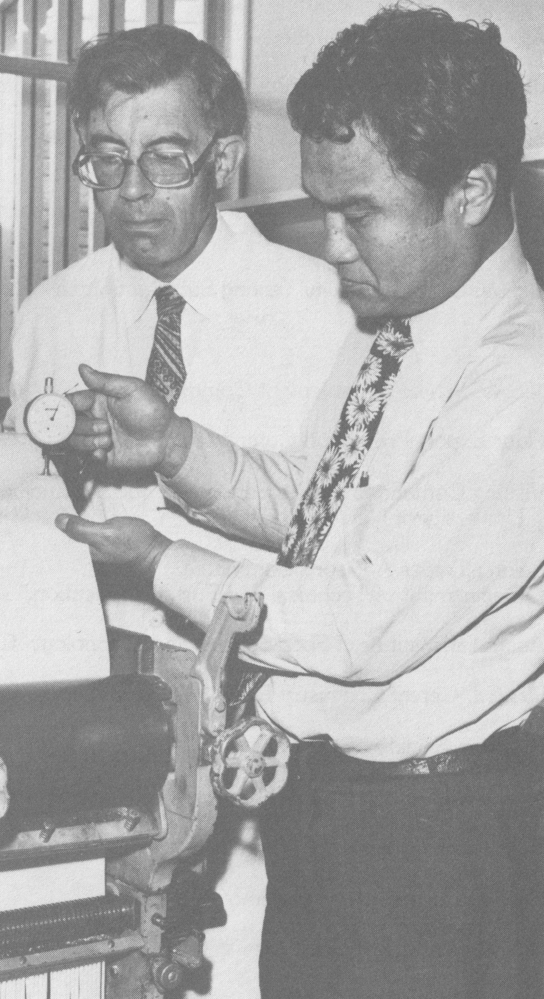
Making noodles with Yoshi Shirao, 1978
In 1978 Australia had not yet established diplomatic relations with China, so who knows how it would have ended if otherwise? The falling number machine was donated to the Chinese, saving AWB millions of dollars in disputed shipping claims.
A logical extension of the market research was to gain an understanding of the importance of wheat quality for foods other than traditional bread and biscuits. The noodle research program started in earnest in 1977, when a Japanese research worker, Yoshi Shirao, arrived at BRI on an AWB-sponsored fellowship.
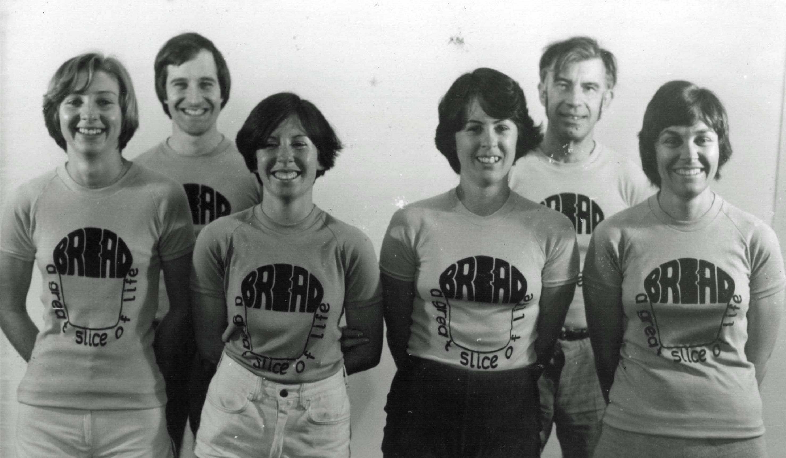
The Bread Burners ready for the 1978 City to Surf
Back – David Mugford, John Moss; Front – Trish Thomas, Josie Blackman, Margaret May, Di Miskelly
It is not often that a scientist is able to work in a completely new field, and this is exactly what happened as the research led by John led to an expanding knowledge of the many kinds of Asian noodles. A recent Google Scholar search resulted in over 7000 ‘’hits’’ for scientific publications on Asian noodles.
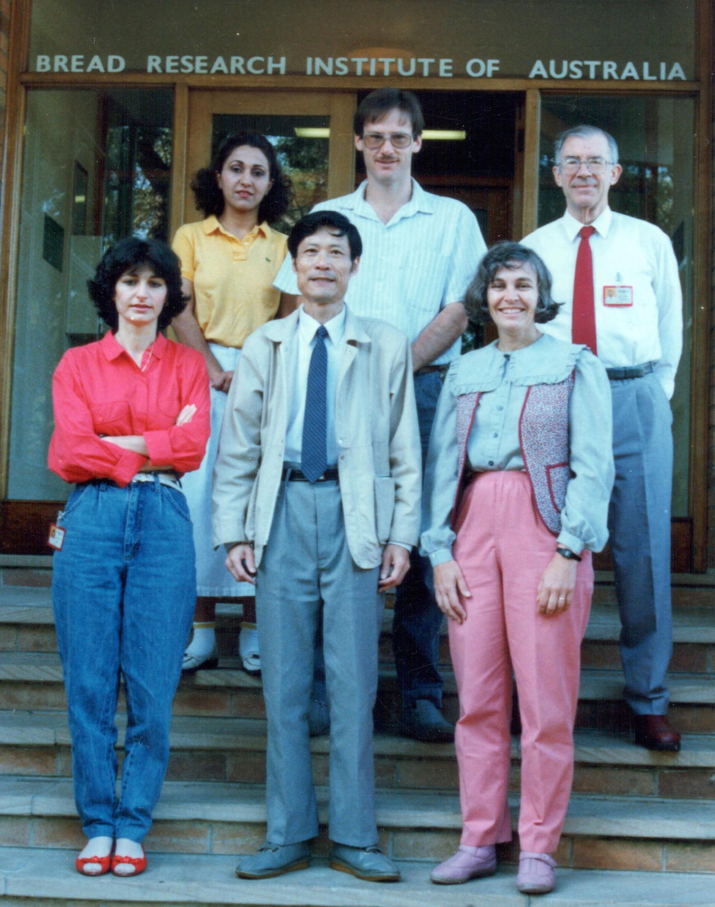
Wheat Technology Division 1989
Back – Soosan Moradi, Peter Gore, John Moss; front – Ziba Khalili, Prof Zuoji Lin, Di Miskelly
In 1982, John was honoured to receive the F. B Guthrie Award for Cereal Chemistry presented by the Royal Australian Chemical Institute Cereal Chemistry Division in recognition for his services to Australian cereal chemistry. For some weeks, he spent the first hour each morning at work crafting his Guthrie address "Interaction effects governing wheat quality”, to be delivered at that year’s Cereal Chemistry conference.
John had many colleagues and research collaborators at BRI, CSIRO Wheat Research Unit and the broader cereals community until his retirement in 1990. Peter Marston, George Hibberd, Una Venn Brown, Colin Wrigley, Peter Gore, Wilson Lee, David Mugford, John Ronalds and Ray Moss … to name a few. There is still a regular monthly coffee meeting with former colleagues “the Codgers” to remember the good times, discuss current events and solve the world’s problems.
It was not all hard work at BRI. There were always Christmas parties, birthday cakes, social events, al fresco picnics in the park and a jog or walk home before or after work. Then there was the year that the ‘’Bread Burners” team entered the City to Surf. After all the training, everyone finished the course. No need to worry about how much fresh bread had been eaten, it was all burnt off!
John’s professional legacy lives on in the “Moss diagram” linking the concepts of wheat protein content, grain hardness and wheat end use. It is a simple idea, as John explained to Bob Cracknell on the back of a serviette in a plane high over the Andes as they were enjoying a fine meal matched with a different wine for each course. Subsequently, the Moss diagram has been universally adopted and can be seen in various formats in many international cereal science publications..
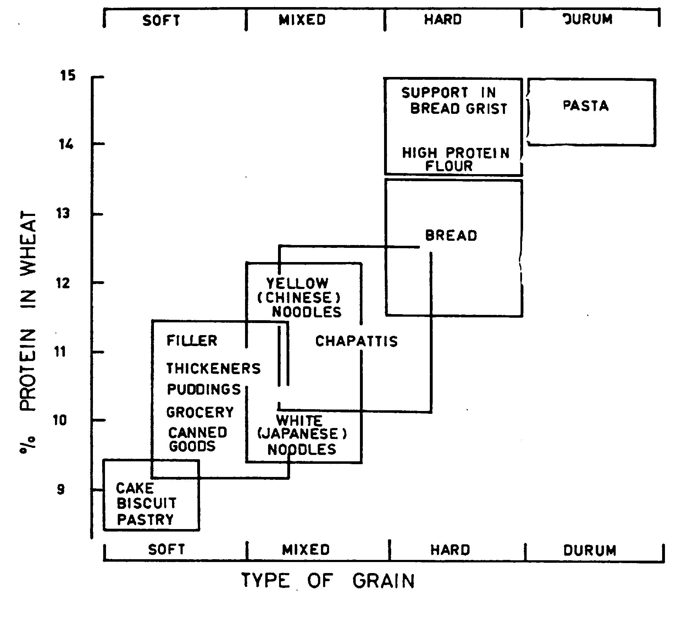
The Moss Diagram showing the linkage between wheat protein, hardness and end products
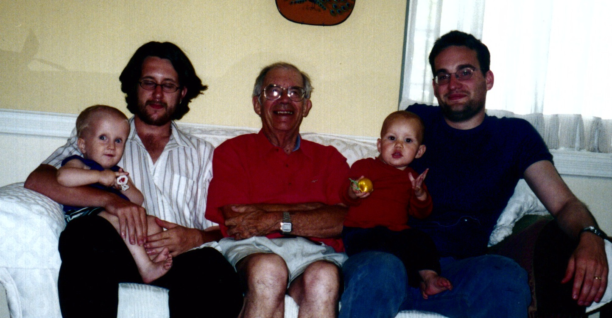
Ambrose, Kevin, Grandpa, Perry, Jay in 2001
What I learnt from Dad
by Vicki Moss
Dad taught me to find out things for myself, to check what people really mean when they say things, and also to be really honest.
If I asked Dad what something meant, he would tell me to look it up in the dictionary. Sometimes if I asked a question, he would offer a choice between the short answer and the long answer. For example, when I asked what “Australian” meant, I asked for the short answer. He answered “Australian.” As he had taught me to be curious, I would inevitably find that I needed to ask for the long answer - which was always very interesting. Its all Dad’s fault that I constantly refer to Wikipedia.
I have many memories of dad reading the paper, and saying “Hey –get a load of this.” He could tell when someone was twisting words to suit their own pre-set views, or quoting numbers that gave their version of the truth – and he would point out the flaw in the argument.
Dad was modest about his work too. When I asked him what he did at work, he told me he made the holes in the spaghetti. The problem was that I was only nine, and because dad taught me to be honest, I thought he was very honest and always told the truth. My teacher asked me what my dad did for work, so I told him. I have never seen anyone laugh with more gusto.
When I went to work with Dad, he walked up and down corridors, into this lab and that, measuring, weighing, writing things down. I thought he was very important – and he was. Every day, he would bring home one or two freshly baked loaves.
On the previous page, is the diagram that dad created. To quote the History of Cereal Chemistry in Australia, he was a “renowned wheat quality expert.” Although the diagram is what dad is best known for, he does not view it as the highlight of his illustrious career.
The most significant contribution HJ Moss made to cereal chemistry was the advice he gave to our Asian neighbours. When the Japanese were experiencing problems with the wheat they were using, Dad suggested that the Western Australian wheat would better suit their process requirements. The Japanese flour millers were very happy with the result and continue to use that type of wheat today. Dad’s scientific approach of observing, analysing and thinking laterally enabled him to provide profound advice that ensured the nice bright yellow colour of Asian noodles for decades to come.
Two Jokes in the Kitchen from Around 1969
by Robert Moss
One of the rarely mentioned qualities of Henry John Moss’s ninety years is his sense of humour. This is surprising because this very wry punfulness has seeped its way down the generations into a family characteristic. No doubt it has been seeping down since the Irish and Northern English origins of the family name, as the style is definitely in keeping with the dry humour of that cultural heritage.
This account involves two jokes that stand out clearly from a period when I must have been having realisations and initial awakenings to humour and how it works. At the time I was around eleven or twelve years old.
The first example embodies the play on words and twists of meaning that continue to pepper Dad’s banter. The only significance of this particular example is that it was the first time I “got” this mix of irony, pun, double meaning or whatever it is …
We had finished dinner and Mum and Dad were doing the dishes – Mum washing and Dad drying. The five of us were carrying on with some no-doubt esoteric conversation when I drifted off and turned to observe my parents. I noticed Mum turn around and take in some of her children’s discourse. She turned to carry on with the dishes, and as I continued to look at their backs she said to Dad, “Well you know where they got their intelligence from, don’t you?”
“Yes … you …” replied Dad as he pulled another rinsed dish out of the sink to dry it, “ … I’ve still got mine …”
“Oh you rotten scoundrel,” said Mum, laughing.
I looked at them for a while longer, trying to understand how this all worked and why it was funny.
I’ve been trying to get it right ever since.
The second example is one of telling a Joke.
Certain members of our immediate family have carried on this tradition with great loyalty.
Again the reason for this particular joke etching itself into my young mind was that up until this point I had never heard a joke like it. I think these were initially called “Absurdist” jokes, though now they are so common they don’t warrant a particular title. I’m sure you all remember this one, but at the time it stopped me in my tracks, because it was nonsense, yet somehow it made sense.
Dad was recently home from work. He was seated at one end of the kitchen table with his five children all seated along the sides. Mum had just sat down after serving the meal. As we were about to eat Dad said, “I heard a joke at work today.”
“What was it?” asked Andrew, always keen for another joke to add to his collection – probably hoping for a long and twisted tale.
“Okay,” said Dad as we all paused, suspended with knives and forks at the ready. “What is black and yellow and goes “Zub … Zub … Zub’?”
“What?” we all asked.
“A bee flying backwards!”
In my memory, we all looked confused with a collective “Huh?”
I looked at Dad and he was laughing like I had never seen him laugh before. His head was tilted right back – jaws wide open – I could clearly see the saliva stretching from the top to the bottom of his mouth as his upper body jerked up and down. The only sound he made was the choked clicking of someone laughing so hard no sound could get out.
Was the joke that funny?
Or was he really laughing at the image of his wife and five children all staring blankly, trying to work out why what was so funny.
I would like to add the little known fact that Henry John Moss is the most ticklish person in the world and that a number of times on his birthday the five of us would jump on him before he woke up, one holding his legs and one holding each arm, while the other two tickled him mercilessly until Mum screamed “Stop it! He’ll have a heart attack!"
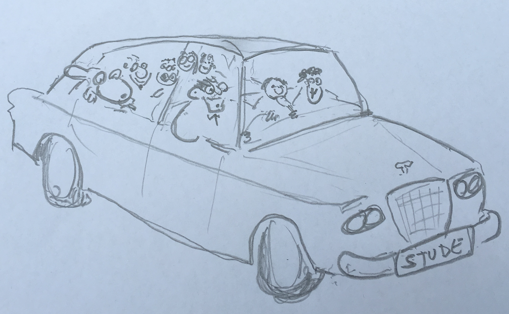
The Studebaker – mid 1960s
by Andrew Moss
The Birthday Fishing Trip – 1972
by Steve Moss
A few days before my 12th birthday Dad asks me if I'd like to go on a fishing trip with him for my birthday. Well, I'd always had a dislike of fishing. To me it's a boring activity characterised by continuous discomfort in some form or other, be it too much sun or too little, wind, sand, rocks slippery or sharp. Most likely both. Etc. But I like spending time with Dad, and who knows, I might turn out to like fishing after all. So I tell him yes, a fishing trip would be great.
You'll have to ask Dad himself for details on where we went, but it was somewhere around Perth, as that's where we lived in 71 and 72. It was somewhere on the coast, there being sea involved.
When we leave home there is a pleasant, gentle breeze. We get out of the car wherever it is we went and we can hardly even stand up in the howling gale that's whipped itself up for us. We find a breakwater made of particularly sharp rocks and Dad says there'll be good fishing there. After a couple of scraped shins and grazed elbows we find a spot behind a small boulder where the wind is slightly less likely to lift us off the ground, and start getting our fishing things ready. I don't know - Line, hook, bait, that kind of stuff I suppose. I seem to remember the line was on a little yellow cone like it's supposed to float and signal where we are if we get swept off the rocks. But thinking about it now I'd say the cone part is just a handle. After a couple of pricked and bloody fingers my bait is loaded on the hook and I throw my line toward the water. The wind blows it right over my head and up onto the rocks behind me. I start reeling the line in and after about a foot I get to a tangle, which has claimed the entire rest of the line. Nothing for it but to start un-tangling it.
The more I try to sort the tangle out the more tangled it gets. It even starts to drag the good bits of the line into it and after a couple of minutes I just have one big tangle. Dad goes to show me how it's done and the tangle gets tighter. It's a battle of wills: Humans 0 Fishing-Line 1.
Half an hour later, between the two of us, we somehow have the line un-tangled. I have the feeling it was the line that decided to straighten itself out for some perverse plan rather than anything Dad or I had done right. I'm just about to have another try at putting the line back in when Dad says maybe we might find a better spot if we walk along the beach a bit. I don't know about better fishing, but anything to get clear of those rocks!
That's when the wind really gets going, coming at us from behind. Nature is giving me a new discomfort to add to my list of things I don't like about fishing: The sting of wind-driven sand. I'm familiar with the phenomenon from days at the beach when the sand gently caresses your lower legs in a breeze. With this wind it feels more like someone's following me with a flame-thrower. We trudge up the beach for what seems like an eternity with no hint of shelter in sight. Dad's starting to look almost as dejected as I feel. Neither of us want to waste all the agony of walking as far as we've come, so we keep going further. I don't recall how we finally reach the decision to turn back, but finally we do.
Dad had been explaining to me in detail that the laws of physics make it impossible for wind-blown sand to get any higher than your hip. Well, I think whoever worked that out must have been about 9 foot tall, because as soon as we turn round it feels like someone is throwing buckets of sand in my face. My eyes fill up with grit so fast they hurt more when I close them than if I'd left them open. Dad says try sheltering your eyes with your hand like a sun-visor. It doesn't start working till my hand is so low I can only see a couple of foot in front of me
I think I must have gone into a kind of trance around then because we seem to get back to the car sooner than I would have thought.
We get to the car and get in. We just sit there for a while not saying anything. I realise that the whole time we were there we hadn't actually got a line into the water. I think that with the agony we'd been through there was no reason why the fish had to suffer as well. We don't talk much on the way home.
The next morning I say to Mum that I already knew I didn't like fishing, but I figured it was what Dad wanted to do so I hadn't minded going along anyway. Well Mum just cracks up at that, can't talk for a while for laughing. Then finally she manages to gasp out that that was exactly what Dad said too - he hates fishing but he organised the trip because he thought I'd like to go.
Funny, but I remember fondly back to that day like it's a good moment in my life. I suppose it must be like when they come back from a war and have a great bond with the buddies they went through the horror with. It certainly didn't make me less want to spend time with Dad.
Note: no fish were harmed in the events depicted in this story.
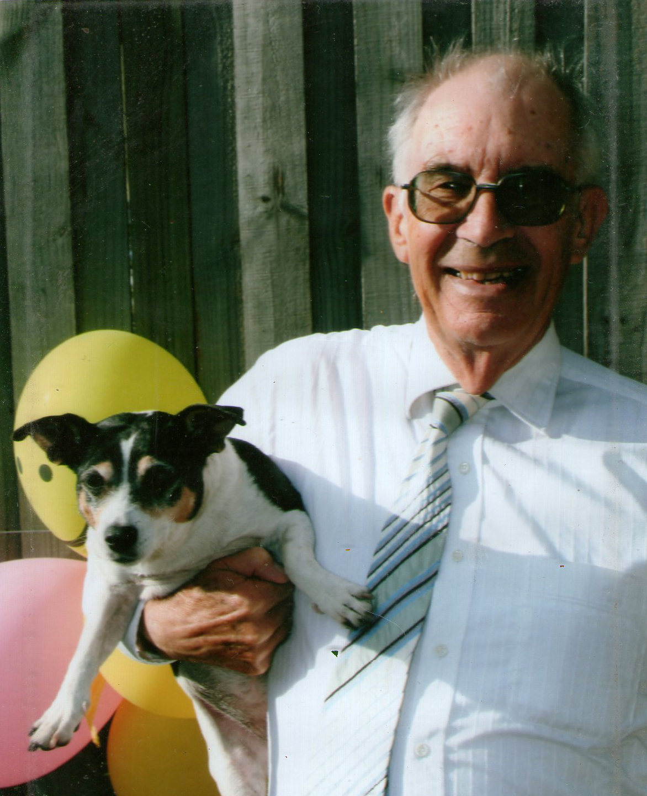
Dad on his 80th birthday with Jaq
Dad, Me & Lachlan Spring 1982
by Andrew Moss
Dad, Lachlan and I walked from Berrima back to the house at Wombat Creek when Lachlan was about three. It took about an hour and a half to walk through the back of Berrima, along the river, through the bush and over some paddocks to get to our mud brick house where Heather, Anne and Judith were waiting for us. Lachlan talked all the way back about the things which are deep and meaningful to a three year old. Interspersed with this dad and I managed to have our own deep and meaningful conversation mainly about the intertwined histories of the various major religions and their perceptions of God, Karma, religious leaders and personal religious practices, mainly aimed at achieving the detente arising from my lurch into Buddhism. We observed that the ten commandments and eight precepts provide for very similar guidelines for living and agreed to disagree about the minor details by the time we arrived at the front door. ‘Your legs must be so tired after such a long walk’ Judith asked Lachlan. ‘No but my mouth is tired.’ replied Lachlan. We then sat down for Sunday lunch and John said Grace, which ticked all the boxes without mentioning any specifics.
Grandpa’s 60th Birthday
by Anne Moss
The year - 1986 and we can reel back to the four Andrew Mossies living in Vienna, still suffering from occasional bouts of homesickness and always eagerly anticipating a visit by family and friends from home. Enter John and Judith who arrived one glorious Spring morning at the Westbahnhoff in Vienna after an exciting series of rail journeys up from Rome - which had taken them over the magnificent Alps and through the beautiful countryside of rural Austria.
Andrew met them at the station and brought them back to our little flat in Sollingergasse. It was April 26th 1986.
Much excitement and chatting catching up with news from home and presents being unwrapped for Lachlan and Heather who were delighted to have grandparents visit. We had great things planned to do and were all looking forward to showing off “Our Town” to G & G and celebrate the big 60th Viennese style.
As we all enjoyed a good brew of black tea brought by G & G in the lounge room – a dirty cloud was emerging on the landscape of this greatly anticipated visit - insomuch that there looked like there had been some big event in the Ukraine involving big clouds, lots of bad TV graphics, graphs and more graphs and excited ramblings of newsreaders in German on every station.
Andrew asked if Grandpa had seen a paper in English with news of this “event” on the train but Grandpa was none the wiser and to this end Andrew and Grandpa decided to sit in the kitchen and listen to the Radio News in German.
A few minutes later and a tad aghast, Andrew declared that a nuclear power station had blown up near Kiev. A place called Chernobyl or Tchernobyl - pronounced like Churn-o-beel in German - to which Grandpa replied in careful and measured tones:
“Yeah and there’s Strontium 90 all over Poland.” He then commenced to regale us with numerous other scientific observations which none of us properly understood in either German or English.
Andrew was flummoxed since he thought rather erroneously, that he was the only German speaker in the family, but Grandpa had understood absolutely everything and had a very sound grasp on what was actually going on. His languid reply after Andrew asked how and why etc was “Yes - well I’ve been reading German scientific journals since I was at uni.” Andrew was gobsmacked. He had no idea Grandpa had such a good grasp of German. He then informed us that it was in the family. When Nanna stopped farming, she had learnt German as a general interest subject and her father had learnt German in order to study chemistry for his medical training in Melbourne and at least one of her grandfathers had learnt German in order to preach to his emigrant Lutheran flock who had joined the Baptist Church in Queensland. We had no idea so much Deutsche sprache ran in the Moss family veins.
However - back to the disaster at hand. What were we going to do? Pack up and go home prematurely before our adventure was over? Or stay and tough out this atomic nightmare? You don’t muck around with radiation. The End of The World was still clear in my mind!
Big discussions were held that night with Grandpa carefully explaining all the issues involved.
Poland had been the first country to get readings to the Atomic Energy Commission (AEC) in Vienna and from their excellent data were able to determine the extent of the danger to Austria and nearby countries. The Poles had known exactly what to do which was to immediately get Iodine to all affected children. The German Language media seemed to be giving reasoned and thorough analysis of the situation whilst the Russians were saying nothing at all. English Language media fluctuated between ‘No Interest’ and ‘They’re all Gunna Die.”
Thankfully for us, Grandpa’s calm, measured, careful and studied analysis of the scientific data, combined with advice from the pommy bloke upstairs from the AEC and the German media, we were reassured that the danger had largely bypassed us in Vienna due to the wind directions in the 24 hours after the explosion. There did not seem to be a lot of expats packing up and heading for the airport, which is always a reassuring observation for us mere simple folk.
Consequently G & G and Andrew decided to proceed with their planned visit to Budapest for a couple of days, leaving me at home with the kids. Life went on as normal, although the intrepid travellers did get geiger countered when they crossed back over the border on the way home.
May Day was a lovely warm sunny Spring day, and like thousands of other people we had a picnic in the park and lay on the grass enjoying the Public Holiday and an afternoon walk in the Vienna Woods.
The next day Austria went into total meltdown {excuse the pun). The sky was falling in and I mean literally. Huge swirling clouds of radioactive dust had covered Europe and it was chaos everywhere. Central Europe was preventing food from crossing borders. The Austrian government said no-one should lie on grass, pregnant women and small children should stay inside, no shoes or coats worn outside should be taken into the house, all the sand from all the sandpits in all the playgrounds in eastern Austria was to be removed, if it rained everyone had to stay inside and we had to brush our teeth and drink only bottled water and no-one but absolutely no-one should eat lettuce under any circumstances.
Alarums all around. I was heading home! We were starting to get phone calls from Australia wondering why we hadn’t got on the first plane out of there. Comfortingly our neighbour upstairs reassured us that the AEC data for Vienna was surprisingly good and that there was no need to panic because a jolly group of Australians living in Vienna had formed a ‘Glee Club,’ which involved doing activities like playing with geiger counters in sandpits on fun family days and being scientists they had kept the data. So post Chernobyl they found that the new readings were all much lower than expected and even lower than previously recorded, presumably because Atmospheric Testing conducted in the decades prior and half lifing merrily away had had a greater detrimental effect than Chernobyl.
Thanks to Grandpa’s calm and measured analysis we concluded that if there had been any damage to us it would have been very minor and already done and there was no benefit in leaving so we decided to stay. Gott Sei Dank we cried and we vowed we would avoid lettuce and lamb from Wales – which had been much more badly affected by fall-out.
When Vicki phoned to wish Grandpa ‘Happy 60th Birthday,’ she said, "How is everyone." Andrew said, "Things have calmed down a lot and we expect Heather will be allowed back to kindergarten tomorrow." Vicki had no idea what Andrew was raving on about. On 25th April she had set out on a bus with 20 other uni students for a ten day field trip. She camped out the back of Bourke and returned on 5 May. At the best of times Vicki doesn't take much notice of the news, but on her field trip she had heard not one word about Chernobyl, and on her return was too busy unpacking (and having a shower) to have caught up with the news.
By the time John’s actual birthday party came around we, like the rest of Vienna had settled into a new, slightly cautious, but not overly worried reality. We celebrated the actual birthday itself at a large Heuriger in Grinzing. The Heueriger is a delightful Viennese institution. It is a ‘New Wine Restaurant,’ which took off as an idea about two hundred years ago when the Emperor decided to tax wine coming into Vienna. The winegrowers then encouraged people to come out to the wineries and consume the wine there to avoid the tax and gradually simple food was supplied like pork knuckles, heavy bread, savoury cheeses and the like. Now that Vienna has spread out around the wineries, they are more or less in the outer suburban area and that is just where Grandpa wanted to go!
So Grandpa’s 60th was celebrated with a little band of buskers playing Walzing Matilda while we enjoyed a delicious Viennese Heuriger feast along with dozens of other families raucously celebrating with a renewed vigour for life and one sans lettuce.
And so the beat goes on! Happy Birthday dear Grandpa and it is a pleasure to be able to celebrate another big milestone with you.
Dad, Me & Lachlan Spring 1996
by Andrew Moss
John and Judith came for Sunday Lunch at our house ’Spring Hill’ in Bowral during Lachlan’s higher school certificate trials in 1996. John, Judith, Anne Heather and I waited and waited for Lachlan to turn up but eventually started without him. Later on, while we were having dessert, Lachlan turned up looking ‘tired and emotional’ and somewhat the worse for wear. "LACHLAN!” I bellowed out. “WHAT DO YOU THINK YOU’RE DOING TURNING UP THIS LATE FOR SUNDAY DINNER? YOU KNEW GRANNY AND GRANDPA WERE COMING FOR LUNCH, AND LOOK AT YOU. NOW’S THE TIME YOU ARE SUPPOSED TO BE KNUCKLING DOWN AND STUDYING HARD FOR YOUR HIGHER SCHOOL CERTIFICATE!”
“Lachlan,” interrupted John softly and somewhat triumphantly. “I’ve been waiting twenty six years to hear this speech!”
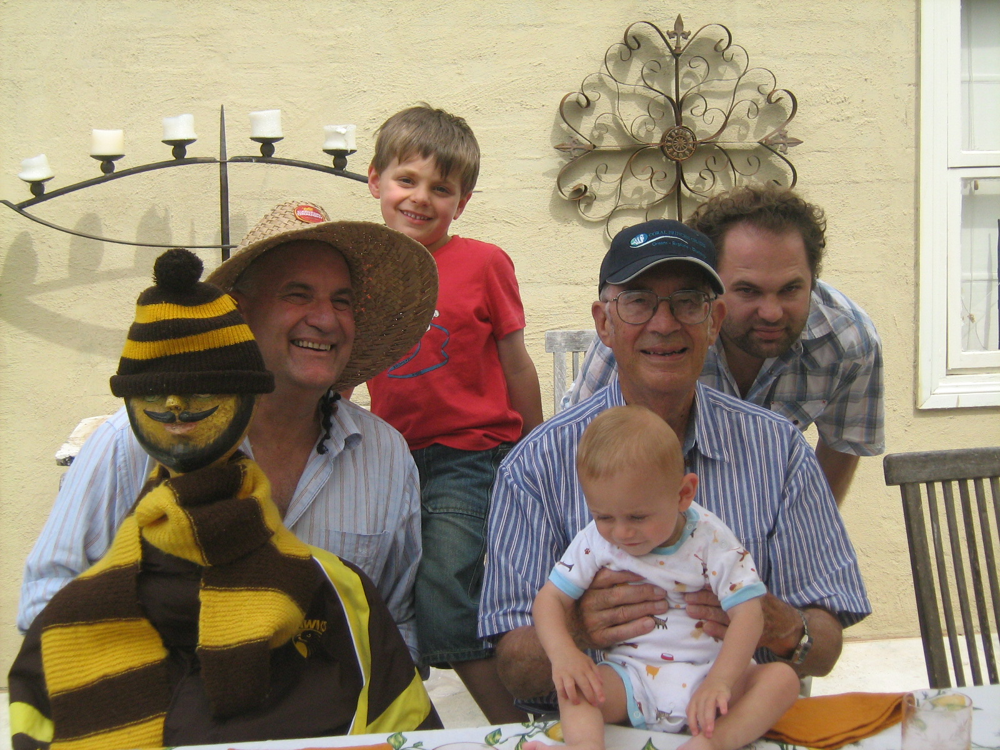
Andrew, Emlyn, Great Grandpa, Gabe & Lachlan 2008
Thomas
Grandpa is always full of ideas by the second we are at Granny and Grandpa’s. He was the man who discovered ways of sharing wheat. Our very smart Grandpa. I think that he is the best grandpa that you could certainly have.
Millie
Grandpa has been here since I was a seed, he has been supporting me all my life and he is still here, and he has done very good things all these years. I am very lucky to have a grandpa like him. Grandpa is someone who cares for every body around him. Nobody would have a grandpa better than him.
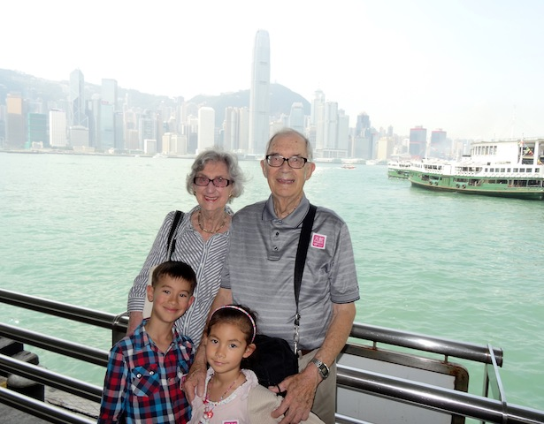
Thomas, Judith, Millie & John in Hong Kong 2013
Wyatt’s Story
One of the things about grandparents is that although you might spend a lot of time with them when you’re young, it takes a while to get to know them. There’s so much history before you’ve even been born. Slowly you realise from peripheral conversations that your grandfather is the kind of person who wins prestigious science awards, the kind of person who devotes his working life to wheat, the kind of person with a special interest in minutiae and complex details within the natural world, the ways that we modify the world’s offerings to suit our needs and we in turn adapt to the environments we create. Like genetically modified wheat.
The implications of relational heredity dawn on you as you begin to notice recurrences in personality, values and behaviour across generations. The lineage looms large: you’re not only inheriting genes, but a culture those genes will react to, including a familial culture that has been passed on multiple times, and morphed in small ways across decades. Grandparents start to seem pretty important.
Then you begin to realise that your grandfather is also the kind of person who has worked throughout their life to become generous and considered, the kind of person with whom a good mutual, ambling walk around Pymble can yield thoughtful returns, and who also has a special interest in knowing that his progeny’s progeny are happy with the paths that they’re taking. In short, there is a dawning knowledge of the heredity of familial love and care, and that is a wonderful reciprocity to be a part of. Congratulations, Henry John Moss, ninety is a pretty big number!
Dad is still getting out and about, enjoying jokes,
stories and conversations with family from 0 to 90
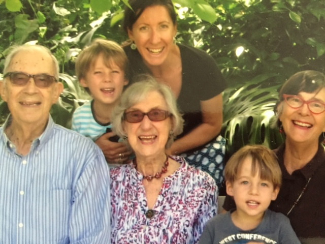
John, Riley, Judith, Jessica, Hugo, Catherine 2016
Springwood in 1982
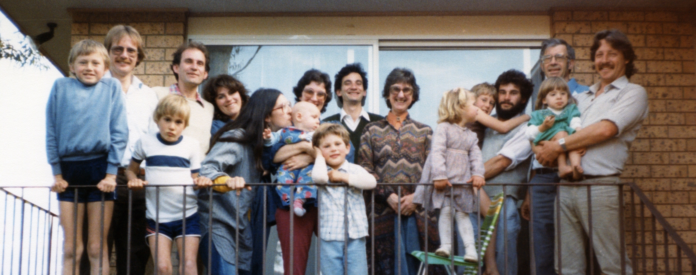
Dad was the photographer of the family. Throughout the 1960s in the living room in Pymble we enjoyed many slide nights. There was much hilarity as we laughed at ourselves, the great times we had experienced at the beach, bushwalking, with friends and family. Above is one of the many examples of dad setting the time delay on the camera and sneaking into the edge of the photo.